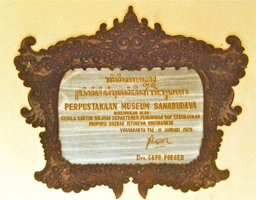
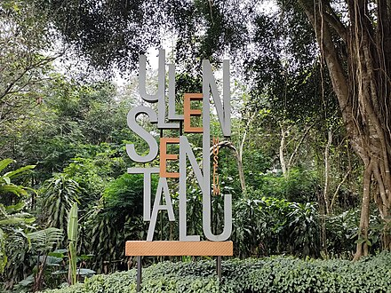
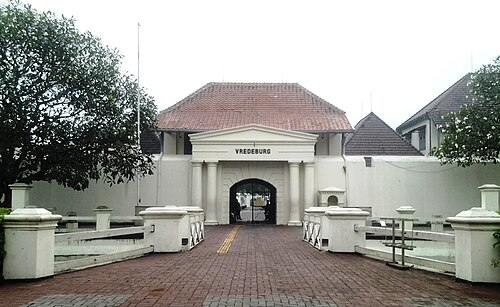

-
Museum Sonobudoyo
Museum Sonobudoyo (bahasa Jawa: ꦩꦸꦱꦺꦪꦸꦩ꧀ꦱꦤꦧꦸꦢꦪ) adalah museum sejarah dan kebudayaan Jawa, termasuk bangunan arsitektur klasik Jawa. Museum ini menyimpan koleksi mengenai budaya dan sejarah Jawa yang dianggap paling lengkap setelah Museum Nasional Republik Indonesia di Jakarta. Selain keramik pada zaman Neolitik dan patung perunggu dari abad ke-8, museum ini juga menyimpan beberapa macam bentuk wayang kulit, berbagai senjata kuno (termasuk keris dan topeng Jawa).
-
Museum Ullen Sentalu
Museum Ullèn Sentalu terletak di Kecamatan Pakem (Kaliurang), Kabupaten Sleman, Daerah Istimewa Yogyakarta, adalah museum yang menampilkan budaya dan kehidupan para bangsawan Dinasti Mataram (Kasunanan Surakarta, Kesultanan Yogyakarta, Praja Mangkunegaran, dan Kadipaten Pakualaman) beserta koleksi bermacam-macam batik (baik gaya Yogyakarta maupun Surakarta).
Museum ini juga menampilkan koleksi patung-patung yang berbentuk tokoh-tokoh bangsawan jaman dahulu seperti tokoh raja-raja beserta permaisurinya dengan berbagai macam pakaian yang dikenakan, baik untuk acara formal maupun untuk keseharian.
-
Museum Benteng Vredeburg
Benteng Vredeburg (bahasa Jawa: ꦩꦸꦱꦶꦪꦸꦩ꧀ꦧꦺꦠꦺꦁꦮ꦳ꦽꦢꦼꦧꦸꦂꦒ꧀) adalah sebuah bangunan benteng pertahanan yang terletak di depan Gedung Agung dan Kraton Kesultanan Yogyakarta (yang juga memiliki tempat ini). Sekarang, benteng ini menjadi sebuah museum. Di sejumlah bangunan di dalam benteng ini terdapat diorama mengenai sejarah Indonesia.
Benteng ini dibangun sebagai pusat pemerintahan dan pertahanan residen Belanda kala itu, dengan dikelilingi oleh sebuah parit (jagang) yang sebagian bekas-bekasnya telah direkonstruksi dan dapat dilihat hingga sekarang. Benteng berbentuk persegi ini mempunyai bastion (menara pantau) di keempat sudutnya.